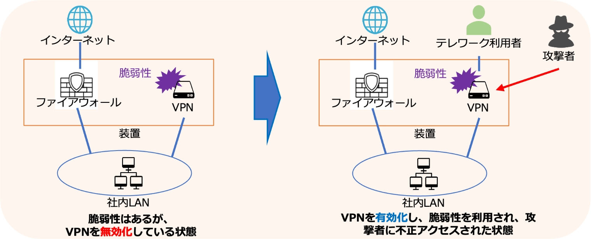

2-3-1. 最近のサイバー被害事例発生の傾向
不正アクセスによって引き起こされるインシデントを通じて、被害が起きた原因の分析内容および効果的なセキュリティ対策とベストプラクティスを紹介します。
テレワーク対応時の脆弱性対策の不備により不正アクセスされた事例
被害の概要
ある企業がファイアウォールとVPN機能を備えた装置を導入しました。最初は、ファイアウォールの機能のみ利用していましたが、テレワークを実現するためにVPNを有効化した結果、存在していた脆弱性が悪用され、不正アクセスが行われました。その結果、装置の設定ファイルやログファイル、さらにはIPアドレスを含む設定情報が盗まれ、ダークWeb上で公開されてしまいました。[6]
被害の原因
VPNの脆弱性情報が公開された際には、VPN機能を無効にしていたため、対策は必要ないと判断されていました。しかし、テレワークに対応するためにVPN機能を有効にしたことで、脆弱性が露呈し、不正アクセスが行われました。このように、機器の利用用途が変わった場合には、必要なセキュリティ対策も変わる可能性があることを考慮していなかったことが、不正アクセスの一因とされています。
対策・ベストプラクティス
- システムの構成変更や機器の設定変更が行われる際には、利用用途の変更なども考慮し、適切なセキュリティ設定や脆弱性対策が行われているかを確認することが重要です。必要に応じて脆弱性診断を受けることも有効な対策の1つです。
- VPN装置は外部のネットワークからアクセス可能な位置に設置されることが多く、外部の攻撃者から攻撃されやすくなります。そのため、VPN装置のベンダーのWebサイトなどを確認し、未対策の脆弱性がないかを点検することが大切です。

図12. 攻撃の概要図
(出典) IPA「コンピュータウイルス・不正アクセスの届出事例［2022年下半期（7月～12月）］」を基に作成
[6]:IPA.”コンピュータウイルス・不正アクセスの届出事例 ［2020年下半期（7月～12月）］”. https://www.ipa.go.jp/security/todokede/crack-virus/ug65p9000000nnpa-att/000088780.pdf , (2023-07-06).